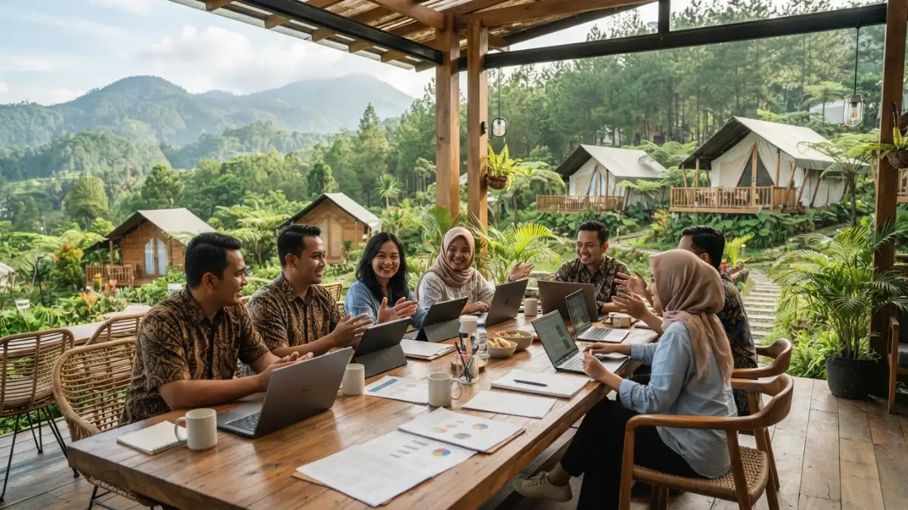

Suasana meeting gaya glamping di Batu dengan tenda mewah dan
pemandangan pegunungan untuk rapat tim perusahaan. (Ilustrasi)
Suasana meeting gaya glamping di Batu dengan tenda mewah dan
pemandangan pegunungan untuk rapat tim perusahaan. (Ilustrasi)
Meeting gaya glamping di Batu adalah pertemuan kerja yang digelar di tenda mewah berfasilitas hotel, dikelilingi udara sejuk pegunungan, sehingga diskusi lebih fokus dan santai.
DAFTAR ISI
- 1. Apa Itu Meeting Gaya Glamping di Batu?
- 2. Mengapa Kota Batu Cocok untuk Meeting di Alam?
- 3. Apa Saja Manfaat Meeting Gaya Glamping?
- 4. Bagaimana Cara Kerja Meeting Glamping dari Persiapan hingga Penutupan?
- 5. Faktor Penting dalam Memilih Lokasi Glamping untuk Meeting
- 6. Perbandingan Meeting Glamping dengan Meeting Hotel dan Ruang Kantor
- 7. Kesalahan Umum dalam Menyelenggarakan Meeting Glamping
- 8. Tips Agar Meeting Glamping Berjalan Efektif
- 9. Kesimpulan
1. Apa Itu Meeting Gaya Glamping di Batu?
Meeting gaya glamping adalah rapat, workshop, atau pertemuan tim yang dilakukan di area glamping, yaitu perkemahan bergaya hotel dengan tenda nyaman, kasur, dan fasilitas pendukung.
Kata glamping berasal dari gabungan glamorous dan camping. Konsepnya menggabungkan pengalaman berada di alam terbuka dengan kenyamanan setara penginapan, seperti tempat tidur layak, kamar mandi, dan area duduk bersama.
Di Kota Batu, Jawa Timur, glamping umumnya berada di kawasan dataran tinggi yang berhawa sejuk.
Meeting gaya glamping dipakai oleh perusahaan, instansi, startup, komunitas, dan lembaga pendidikan.
Format ini cocok untuk perencanaan tahunan, evaluasi kinerja, brainstorming, onboarding, dan workshop yang membutuhkan suasana berbeda dari kantor.
Meeting glamping bukan pengganti semua jenis rapat. Rapat dengan presentasi formal yang membutuhkan perangkat audio visual lengkap, atau pertemuan dengan peserta berkebutuhan mobilitas khusus, perlu dinilai ulang kecocokannya.
Risiko yang perlu diantisipasi meliputi hujan, sinyal yang tidak stabil, dan suhu malam yang dingin.
2. Mengapa Kota Batu Cocok untuk Meeting di Alam?
Kota Batu cocok untuk meeting di alam karena berhawa sejuk, berada di dataran tinggi Jawa Timur, dan menerima jutaan wisatawan per tahun sehingga akomodasinya beragam.
Kota Batu berada di kawasan pegunungan yang dikelilingi gunung seperti Arjuno, Welirang, dan Panderman.
Ketinggian ini membuat udara umumnya lebih sejuk dibanding dataran rendah Jawa Timur. Kota Batu juga dapat dijangkau lewat jalur darat dari Kota Malang dan Surabaya.
Skala pariwisata Kota Batu menunjukkan ekosistem akomodasi yang matang. Dinas Pariwisata Kota Batu mencatat 9.794.603 wisatawan sepanjang 2025, terdiri dari 9.755.241 wisatawan nusantara dan 38.362 wisatawan mancanegara. Data final ini dirilis pada Januari 2026.
Sebagai pembanding, kunjungan wisatawan pada 2024 tercatat sebanyak 11.005.189 orang. malang-post detik
Selisih sekitar 1,3 juta kunjungan antara 2024 dan 2025 tidak berarti Kota Batu kehilangan daya tarik, tetapi menandakan pasar yang kompetitif.
Bagi penyelenggara meeting, kondisi ini memberi ruang untuk membandingkan beberapa penyedia glamping, meski kebijakan harga tetap ditentukan masing-masing pengelola. Data pariwisata daerah lain dapat ditelusuri di situs Badan Pusat Statistik Kota Batu.
3. Apa Saja Manfaat Meeting Gaya Glamping?
Manfaat utama meeting glamping meliputi suasana kerja rileks, interaksi tim yang akrab, fokus peserta terjaga, dan pengalaman berbeda dari ruang rapat biasa.
Berikut manfaat yang umumnya dirasakan penyelenggara:
- Fokus lebih terjaga. Peserta menjauh dari gangguan rutinitas kantor, meski penggunaan gawai tetap perlu diatur.
- Interaksi lebih cair. Peserta makan, berdiskusi, dan beristirahat di lokasi yang sama, sehingga percakapan informal terjadi alami.
- Mendukung brainstorming. Lingkungan yang terbuka memfasilitasi beberapa anggota tim untuk mengembangkan pemikiran yang lebih independen selama sesi brainstorming.
- Logistik terpusat. Penginapan, ruang pertemuan, dan konsumsi sering tersedia dalam satu lokasi.
- Pengalaman berkesan. Format yang berbeda dapat meningkatkan keterlibatan peserta pada agenda.
Manfaat ini tidak otomatis muncul. Hasil meeting glamping bervariasi tergantung tujuan acara, desain agenda, dan karakter peserta. Tidak ada jaminan bahwa lokasi di alam akan meningkatkan produktivitas tim.

Ruang kerja bersama di area glamping Batu yang dilengkapi meja dan kursi untuk sesi meeting tim. (Ilustrasi)4. Bagaimana Cara Kerja Meeting Glamping dari Persiapan hingga Penutupan?
Meeting glamping berjalan dalam empat tahap: menentukan tujuan dan peserta, memilih lokasi, menyusun agenda kerja dan rekreasi, lalu mengevaluasi hasil pertemuan.
- Menentukan tujuan dan peserta. Penyelenggara menetapkan hasil yang diharapkan, misalnya rencana kerja kuartal berikutnya, serta jumlah dan profil peserta.
- Memilih lokasi dan memesan. Penyelenggara membandingkan penyedia glamping di Batu berdasarkan fasilitas, kapasitas, dan penawaran tertulis, lalu mengonfirmasi tanggal.
- Menyusun agenda. Sesi kerja inti ditempatkan pada waktu peserta paling segar, sedangkan aktivitas ringan dan waktu bebas mengisi sisanya.
- Menjalankan dan mengevaluasi. Panitia melakukan pencatatan terhadap keputusan yang diambil dalam rapat, mendistribusikan arahan tindak lanjut kepada seluruh pihak terkait, serta mengundang masukan dan saran dari para peserta mengenai penyelenggaraan acara tersebut.
Durasi yang umum dipilih adalah satu hari atau dua hari satu malam, tergantung kebutuhan. Format yang lebih panjang membutuhkan perencanaan istirahat yang lebih matang.
5. Faktor Penting dalam Memilih Lokasi Glamping untuk Meeting
Faktor penting memilih lokasi glamping untuk meeting mencakup akses jalan, sinyal internet, ketersediaan ruang bersama, kapasitas tenda, kelistrikan, keamanan, dan kebijakan pembatalan dari pengelola.
- Akses jalan. Jalur menuju lokasi glamping di Batu bisa menanjak dan sempit. Pastikan kendaraan peserta atau bus dapat menjangkau lokasi.
- Sinyal dan internet. Meeting yang membutuhkan video call atau presentasi daring memerlukan koneksi yang diuji sebelum hari acara.
- Ruang bersama. Area beratap atau ruang terbuka tertutup diperlukan agar sesi kerja tidak terganggu hujan.
- Kapasitas dan susunan tenda. Jumlah tenda dan tipe tempat tidur harus sesuai komposisi peserta.
- Kelistrikan. Kebutuhan colokan untuk laptop dan proyektor perlu dikonfirmasi.
- Keamanan dan kebersihan. Tempat penyimpanan barang, penerangan malam, dan sanitasi memengaruhi kenyamanan.
- Kebijakan pembatalan. Cuaca dan perubahan jadwal membuat aturan perubahan tanggal menjadi penting.
Panduan terperinci tersedia di artikel cara memilih lokasi glamping untuk meeting di Batu.
6. Perbandingan Meeting Glamping dengan Meeting Hotel dan Ruang Kantor
Meeting glamping unggul dalam suasana dan kedekatan tim, sedangkan meeting hotel unggul dalam kelengkapan ruang formal, dan ruang kantor unggul dalam biaya serta kepraktisan.
| Aspek | Meeting Glamping | Meeting Hotel | Ruang Kantor |
|---|---|---|---|
| Suasana | Alam terbuka, santai | Formal, terkontrol | Familiar, rutin |
| Fasilitas presentasi | Bervariasi, perlu dicek | Umumnya lengkap | Sesuai kantor |
| Interaksi informal | Tinggi | Sedang | Rendah |
| Risiko cuaca | Ada | Rendah | Tidak ada |
| Kepraktisan | Perlu perjalanan dan persiapan | Perlu perjalanan | Paling praktis |
Pilihan terbaik bergantung pada tujuan rapat. Meeting glamping sesuai untuk sesi kreatif dan pembangunan tim, sedangkan rapat yang menuntut dokumentasi formal atau presentasi teknis kompleks sering lebih aman di ruang yang perlengkapannya sudah teruji.
7. Kesalahan Umum dalam Menyelenggarakan Meeting Glamping
Kesalahan umum dalam meeting glamping meliputi agenda terlalu padat, tidak mengecek sinyal, mengabaikan cuaca, kurang mengatur logistik, dan menganggap suasana santai menggantikan tujuan rapat.
- Agenda terlalu padat. Peserta yang menempuh perjalanan naik ke Batu membutuhkan waktu adaptasi dan istirahat.
- Tidak menguji sinyal. Koneksi yang lemah dapat menggagalkan sesi daring atau pengunduhan materi.
- Mengabaikan cuaca. Kawasan pegunungan dapat berubah cuaca dengan cepat, sehingga rencana cadangan perlu tersedia.
- Logistik kurang matang. Konsumsi, transportasi, dan perlengkapan hangat untuk malam hari sering terlupa.
- Tujuan tidak jelas. Tanpa target hasil, meeting glamping berisiko berubah menjadi liburan tanpa keputusan.
- Mengabaikan kebutuhan peserta. Alergi makanan, kondisi kesehatan, dan kenyamanan tidur perlu didata sejak awal.
8. Tips Agar Meeting Glamping Berjalan Efektif
Meeting glamping berjalan efektif bila tujuan ditetapkan jelas, sesi kerja dipisah dari sesi santai, perlengkapan dicek sebelumnya, dan cadangan rencana disiapkan untuk cuaca hujan.
- Tetapkan satu sampai tiga keputusan yang harus dihasilkan meeting.
- Letakkan sesi kerja berat pada pagi hari dan sesi ringan pada sore atau malam.
- Kirim informasi perjalanan, barang bawaan, dan jadwal kepada peserta sebelum hari acara.
- Tunjuk satu penanggung jawab logistik di lokasi.
- Siapkan cadangan agenda dalam ruangan.
- Catat hasil rapat pada hari yang sama.
9. Kesimpulan
Meeting gaya glamping di Batu efektif ketika tujuan, lokasi, dan agenda dirancang bersama.
Mulailah dengan menetapkan keputusan yang ingin dicapai, bandingkan beberapa lokasi glamping berdasarkan akses, sinyal, ruang kerja, dan kebijakan pengelola, lalu susun jadwal yang menyeimbangkan kerja dan istirahat.
Siapkan cadangan untuk cuaca dan evaluasi hasil pada hari yang sama. Dengan perencanaan ini, meeting glamping dapat menjadi format kerja yang produktif dan berkesan bagi tim.